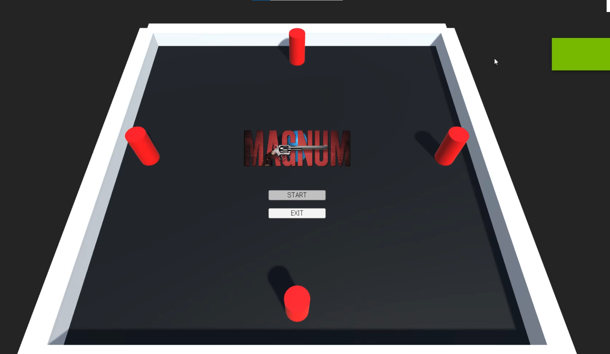
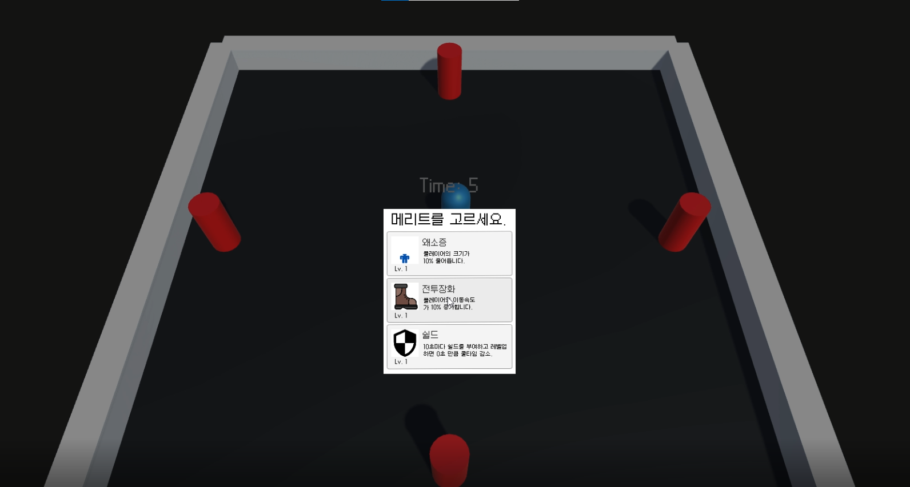
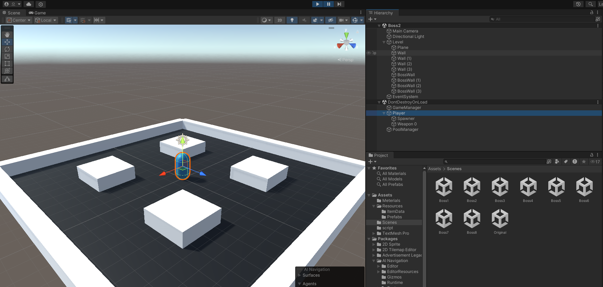
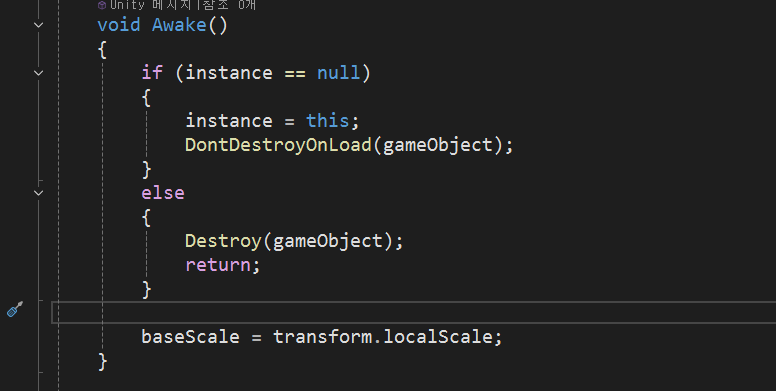
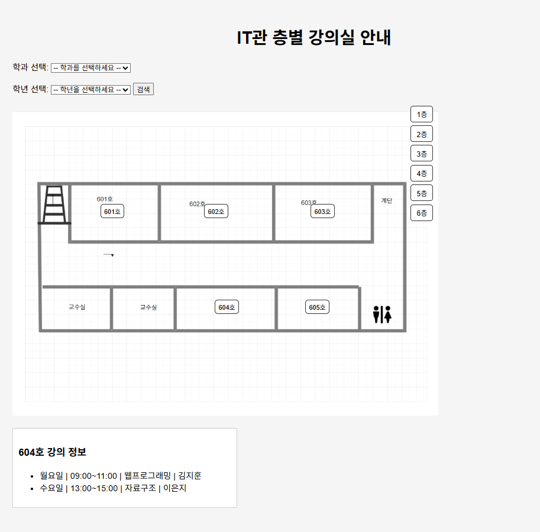
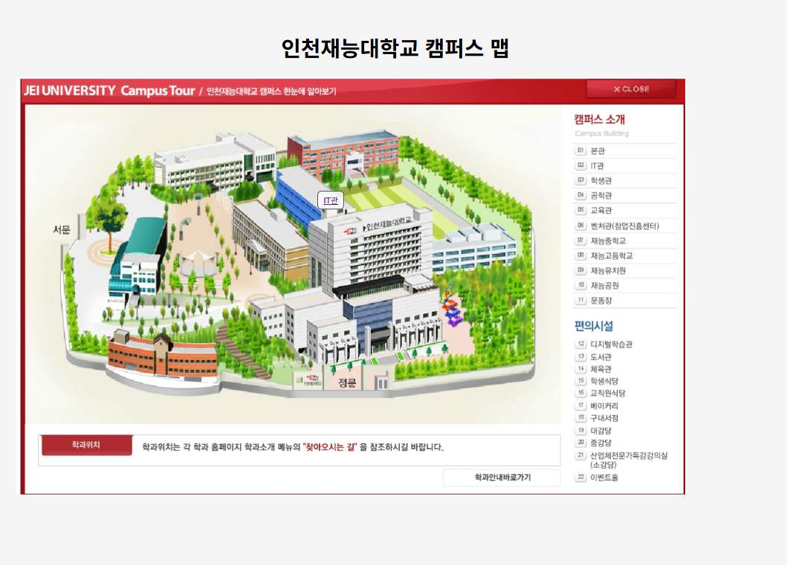
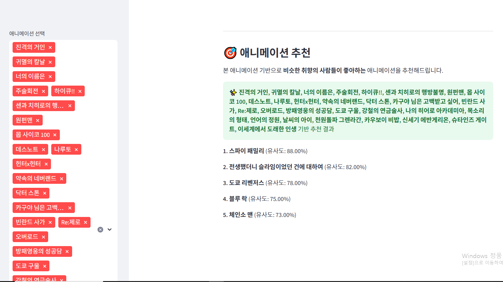
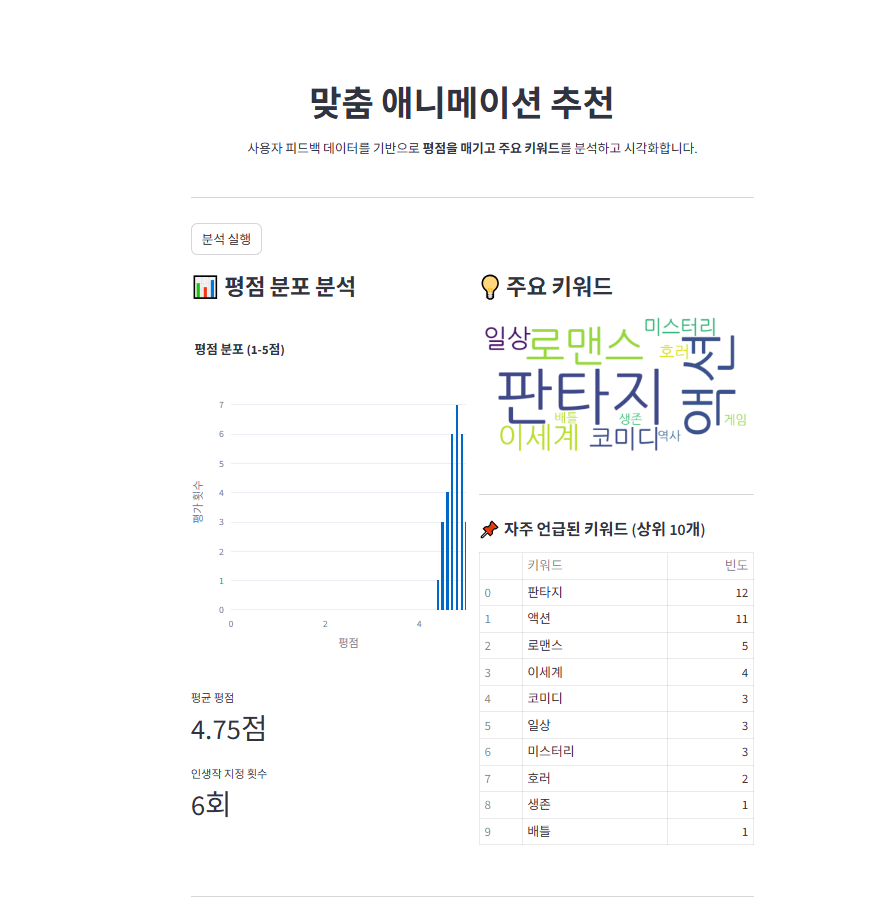
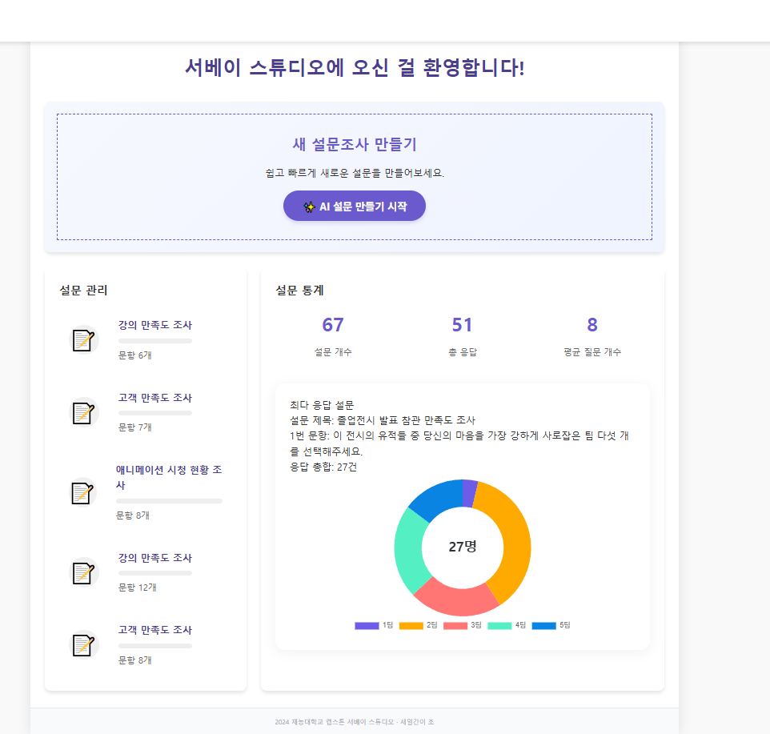
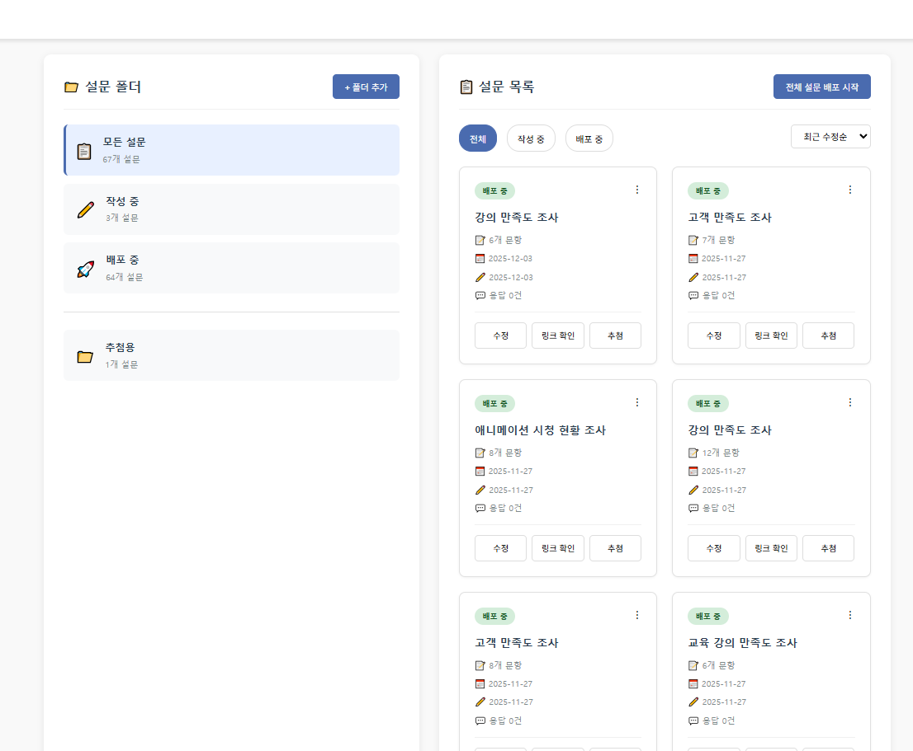

개발자
안녕하세요. 개발자 하경완입니다.
개발이라는 길에 들어서게 된 계기는 아버지의 영향이 컸지만 그 과정에서 점점 코드를 통해 세상을 직접 만들고 구현하는 경험에 매료되었습니다.
특히 Unity와 C#을 활용해 직접 게임을 구현하면서 저는 개발이라는 분야에 빠지게 됐습니다.
현재는 더 넓은 견문과 실력을 쌓기 위해 실무와 가까운 다양한 외부 프로젝트와 활동을 통해 배움에 집중하고 있습니다.
Unity
C#, Python, HTML/CSS, JavaScript, Java, Kotlin
Git, Visual Studio, Photoshop, Figma, Kubernetes, Windsurf, Docker
장르: 슈팅 로그라이크 게임
다양한 무기와 능력을 활용해 적을 물리치는 탑다운 슈팅 로그라이크 게임. Unity로 개발 중이며 플레이 감각과 UI/UX 개선에 집중하고 있음.


개인의 기여 : 개인의 기여 100%인 개인 프로젝트


문제 발생 : 플레이어 오브젝트가 기존에 있던 맵에서 다른 맵으로 이동할 때 적용된 능력치가 전부 초기화 되는 현상 발생.
원인 : 유니티는 다른 씬이 로드 될 때 기존 씬에 있던 오브젝트들은 전부 파괴됨.
문제 해결(Solution) : 싱글톤을 적용해 주요 오브젝트들이 다른 씬으로 이동해도 파괴되지 않도록 싱글톤 그룹을 만들어 수정된 데이터를 계속 유지시키도록 바꿈.
기술 스택: HTML/CSS/JavaScript, GitHub Pages
학교를 소개하는 목적의 반응형 웹사이트. 클린 UI/UX를 고려하여 사용자 친화적인 정보 전달에 초점을 맞춤.


https://5e720ad5.jeiu-map.pages.dev/
개인의 기여 : 웹사이트 기획, 코딩, UI/UX 디자인
기술 스택: HTML/CSS/JavaScript
애니메이션 추천 사이트. 사용자가 재밌게 본 애니메이션을 선택하면 비슷한 취향의 사람들이 좋아하는 애니메이션을 추천해주는 사이트.


https://cutejapanesegirl-animation-app-1cd620.streamlit.app/
개인의 기여 : 100% 개인 프로젝트 및 100% AI 활용 제작
다른 웹사이트와의 차별점을 두기 위해 장르 키워드, 평점 분포 뿐만 아니라 '인생작' 이라는 시스템 도입.
기술 스택: HTML/CSS/JavaScript, OpenRouter, Cloudflare
AI 기반 자동 설문 제작 툴. 설문의 주제를 입력하면 자동으로 AI가 설문을 제작해줌.


https://survey-project-a59.pages.dev/
개인의 기여 : 웹사이트 제작, 아이디어 및 피드백 취합, 중간 발표, 도록 수정, 캡스톤 당일 시연 설명
설문 참여자들에게 소정의 상품을 제공하기 위한 '추첨' 시스템 구현. 참여자 수에 따라 추첨 인원 수를 자동 조정.